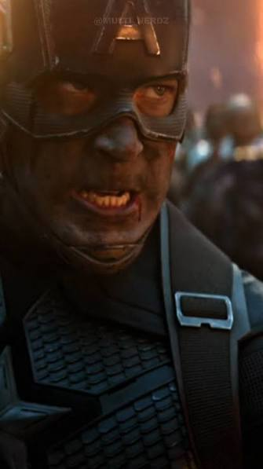
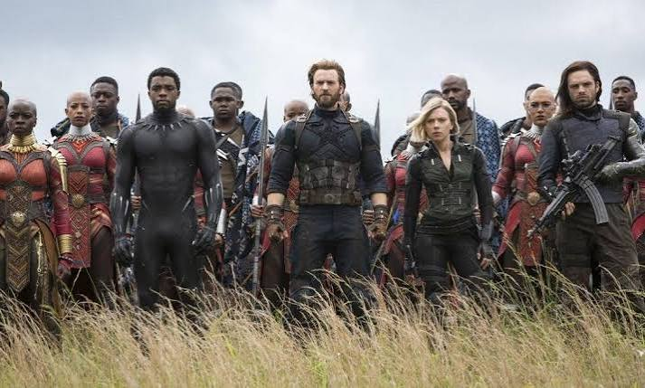
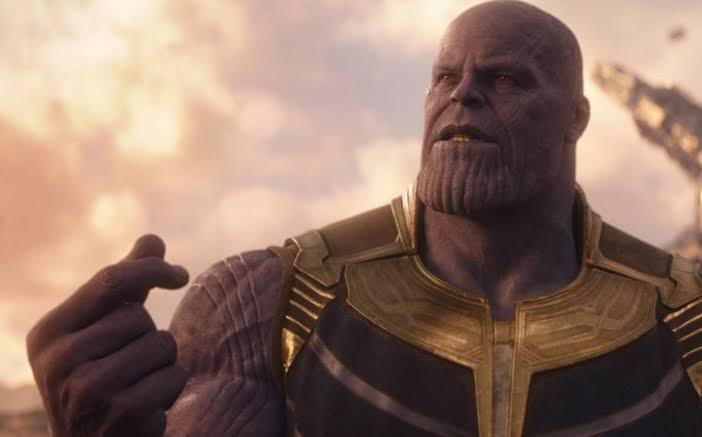
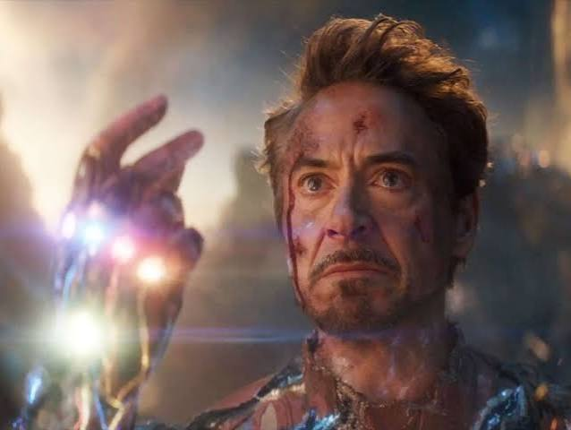

VINGADORES ULTIMATO

HISTORIA
Lançado em 2019, Vingadores: Ultimato mostra os heróis sobreviventes tentando lidar com as consequências do estalo de Thanos, que eliminou metade da vida do universo. Cinco anos depois, os Vingadores descobrem uma maneira de viajar no tempo e recuperar as Joias do Infinito, buscando trazer de volta aqueles que desapareceram. Porém, a missão acaba provocando um confronto definitivo contra Thanos. O filme representa um dos momentos mais emocionantes da Marvel, marcando o encerramento de uma grande jornada de heróis e sacrifícios.


BASTIDORES
As gravações de Vingadores: Ultimato aconteceram junto com Guerra Infinita, tornando a produção ainda mais complexa. Os diretores Joe e Anthony Russo precisaram reunir dezenas de atores em cenas grandiosas. Uma curiosidade é que o funeral de Tony Stark foi filmado com praticamente todo o elenco reunido em uma única tomada. Para evitar spoilers, os diretores mantiveram diversos detalhes da história em segredo, chegando a usar nomes falsos para algumas cenas. O filme também teve momentos emocionantes nos bastidores, especialmente durante as últimas gravações de Robert Downey Jr. e Chris Evans como seus personagens


DETALHES DOS BASTIDORES
Para evitar spoilers, a Marvel escondeu grande parte do roteiro dos atores. Tom Holland, por exemplo, recebeu apenas suas falas, sem conhecer toda a história. A cena do funeral de Tony Stark foi apresentada ao elenco como se fosse um casamento, surpreendendo os atores durante as gravações. Além disso, quase todo o elenco principal esteve presente naquele momento emocionante.
CURIOSIDADES
-
Armadura de Tony Stark: Robert Downey Jr. utilizou uma armadura feita com efeitos visuais e partes físicas durante algumas gravações.
-
Cena improvisada: A frase “I love you 3000”, dita pela filha de Tony Stark, foi inspirada em uma expressão real dos filhos de Robert Downey Jr.
-
Última reunião: A cena final dos seis Vingadores originais foi uma das poucas ocasiões em que todos estiveram juntos durante as gravações.